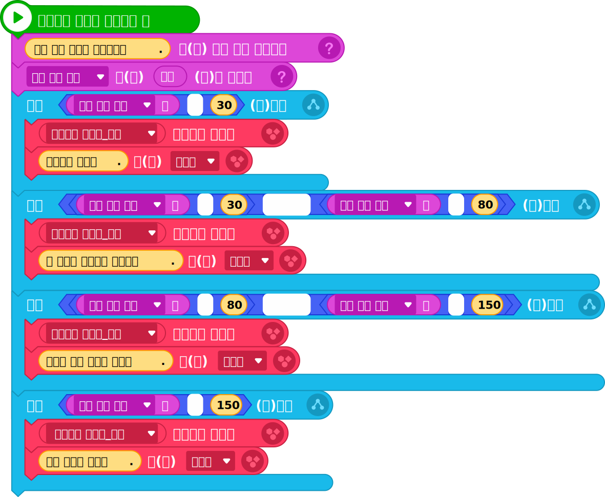

2알고리즘 설계
미세 먼지 농도를 입력하면 이에 따라 신호등 모양을 바꾸고 행동 요령을 안내한다.
| 대기 상태 | 좋음 | 보통 | 나쁨 | 매우 나쁨 |
|---|---|---|---|---|
| 기준 농도 | 30 이하 | 30 초과 80 이하 | 80 초가 150 이하 | 150 초과 |
| 신호등 모양 | 파랑 | 초록 | 주황 | 빨강 |
| 행동 요령 | 외출해도 좋아요. | 몸 상태에 우의해서 활동해요. | 무리한 실외 활동을 피해요. | 실외 활동을 피해요. |
3프로그래밍
①준비하기
| 오브젝트 | |
|---|---|
| 변수 | 미세 먼지 농도 |
②프로그램 작성하기
|  |
Tip
미세 먼지 농도가 ‘보통’ 등급일 때는 두 가지 조건을 모두 만족해야 하므로 ‘그리고’ 연산자를 사용하여 두 조건을 연결합니다.